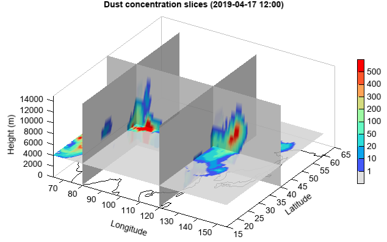

slice3¶
-
Axes3DGL.slice(*args, **kwargs): Volume slice planes
- Parameters
x – (array_like) Optional. X coordinate array.
y – (array_like) Optional. Y coordinate array.
z – (array_like) Optional. Z coordinate array.
data – (array_like) 3D data array.
xslice – (list) X slice locations.
yslice – (list) Y slice locations.
zslice – (list) Z slice locations.
cmap – (string) Color map string.
- Returns
Slice plane graphics.
Example of 3D slice plot
X=Y=Z = arange(-2, 2.1, 0.2) X,Y,Z = meshgrid(X, Y, Z) V = X*exp(-X**2-Y**2-Z**2) xslice = [-1.2,0.8,2] yslice = [0] zslice = 0 slice3(X, Y, Z, V, facecolor='interp', xslice=xslice, yslice=yslice, zslice=zslice) colorbar()

3D slice plot of dust concentration
#Set date sdate = datetime.datetime(2019, 4, 15, 0) #Set directory datadir = 'D:/Temp/mm5' #Read data fn = os.path.join(datadir, 'WMO_SDS-WAS_Asian_Center_Model_Forecasting_CUACE-DUST_CMA_'+ sdate.strftime('%Y%m%d%H') + '.nc') f = addfile(fn) st = f.gettime(0) t = 20 dust = f['CONC_DUST'][t,:,:,:] levels = dust.dimvalue(0) dust[dust<5] = 0 height = meteolib.pressure_to_height_std(levels) lat = dust.dimvalue(1) lon = dust.dimvalue(2) #Plot xslice = [80,120] yslice = [40] zslice = [4000] ax = axes3d() ax.set_rotation(328) ax.set_elevation(-41) grid(False) lighting() geoshow('coastline') levs = [1,10,20,50,100,200,300,400,500] cols = makecolors(len(levs) + 1, cmap='MPL_rainbow') cols[0] = [220,220,220,220] slice3(lon, lat, height, dust, levs, colors=cols, facecolor='interp', edgecolor=None, xslice=xslice, yslice=yslice, zslice=zslice) colorbar(aspect=30) xlim(65, 155) xlabel('Longitude') ylim(15, 65) ylabel('Latitude') zlim(0, 15000) zlabel('Height (m)') tt = st + datetime.timedelta(hours=t*3) title('Dust concentration slices ({})'.format(tt.strftime('%Y-%m-%d %H:00')))